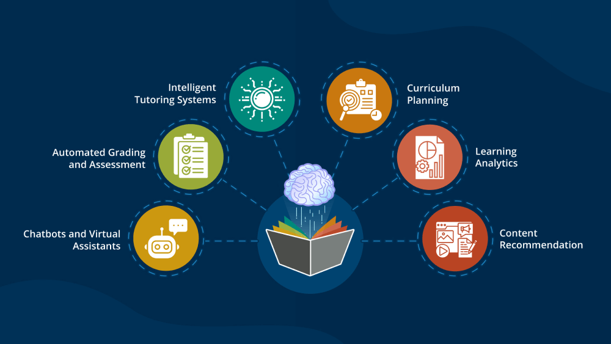

Introduction
Education is evolving rapidly, and AI is at the heart of this transformation. From virtual classrooms to AI tutors, learning is becoming more accessible and personalized.
AI in Classrooms
- Platforms like Duolingo: Use AI to create personalized lessons for learners worldwide.
- Virtual Reality (VR) and Augmented Reality (AR): Enable immersive and engaging learning experiences.
Benefits of AI in Education
- AI Analytics: Identifying students’ strengths and weaknesses to customize learning plans.
- Automated Grading: Saving teachers’ time for creative and interactive teaching.
Challenges and Ethical Considerations
While AI offers many benefits, its implementation in education also raises ethical questions:
- Balancing AI with Human Educators: Ensuring empathy and emotional understanding in teaching.
- Data Privacy: Protecting sensitive student data from misuse.
Conclusion
AI is making education accessible globally, fostering inclusivity and innovation. Its potential to transform learning is immense, but it requires responsible and ethical implementation.